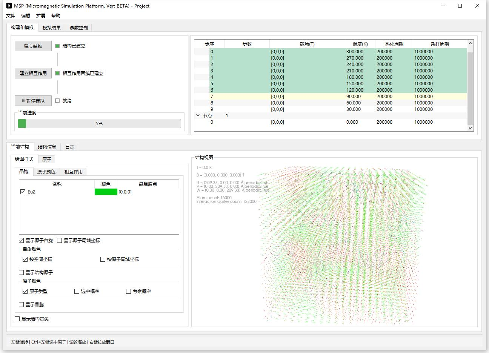
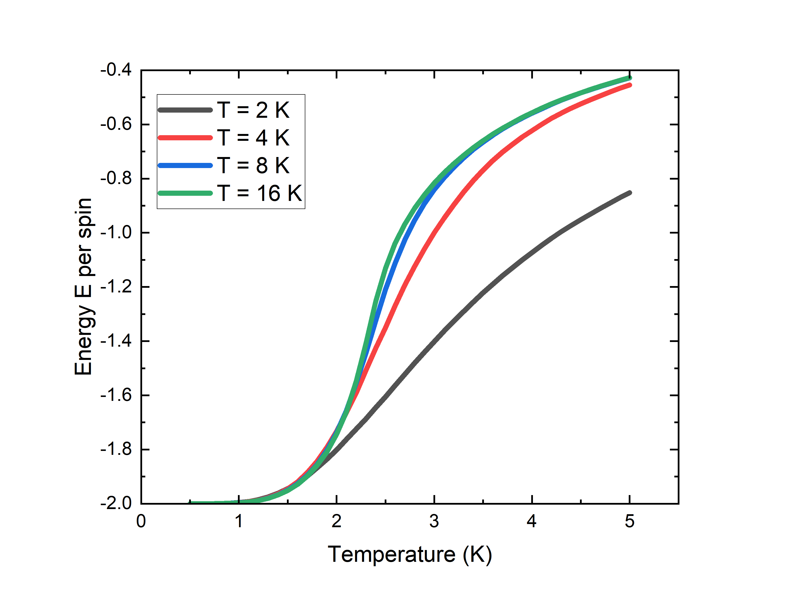
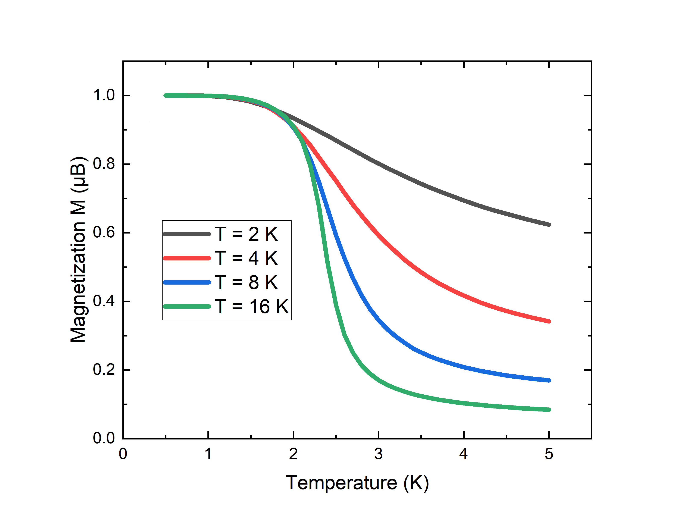
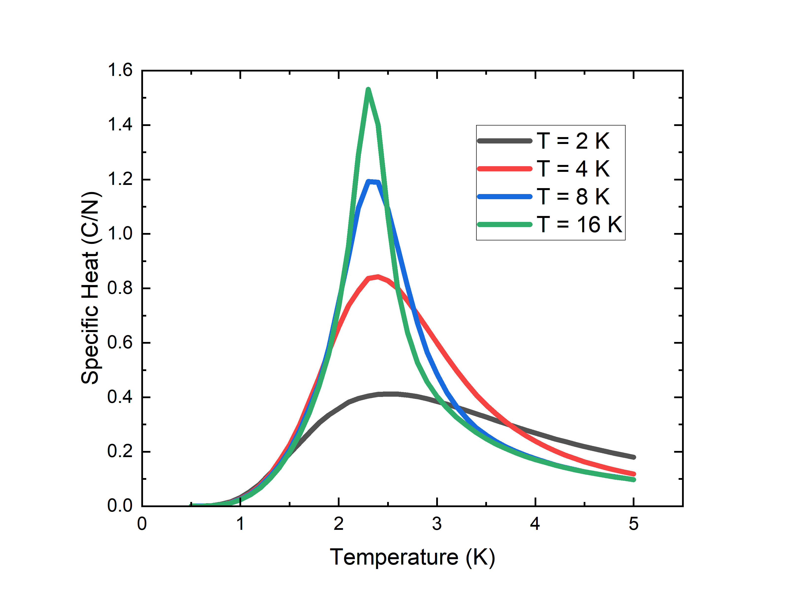
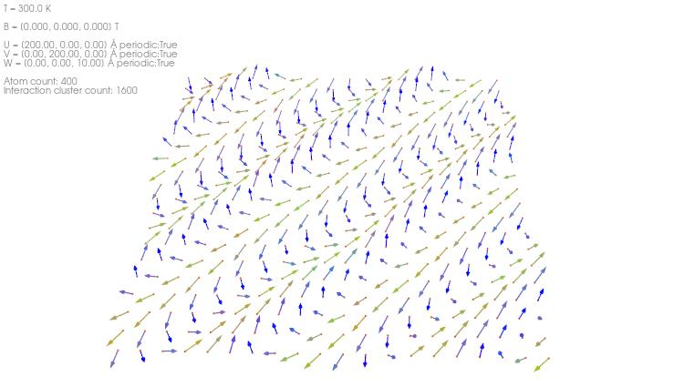
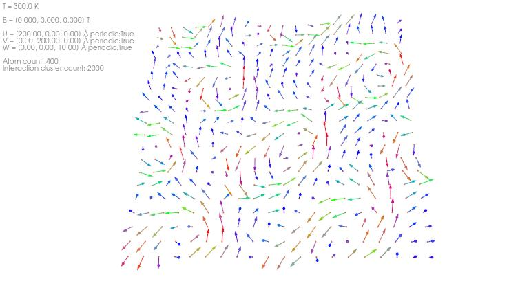
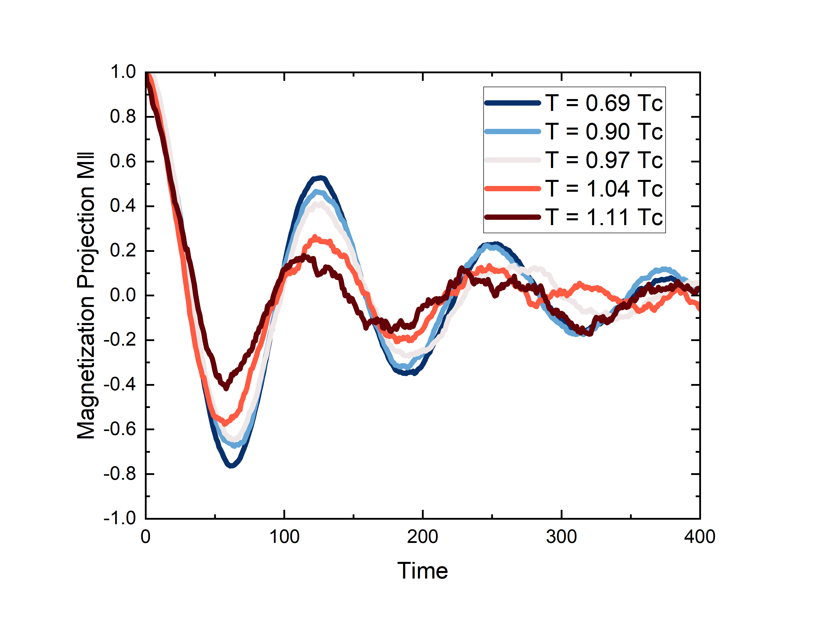
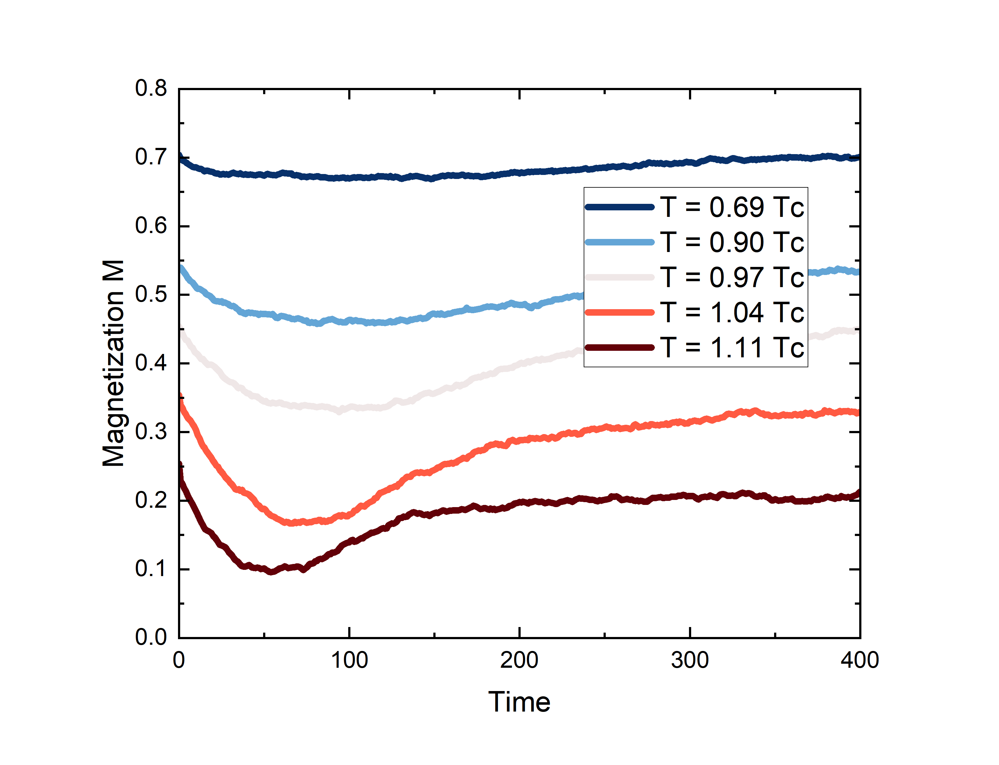

微磁模拟平台
面向复杂晶体材料自旋结构与原子尺度磁学研究的模拟平台，集成蒙特卡洛（MC）与 Landau-Lifshitz-Gilbert（LLG）动力学， 支持结构建模、相互作用配置、CPU/GPU 并行计算与结果可视化，适用于科研与教学。
MSP 是面向复杂晶体材料自旋结构与原子尺度磁学研究的模拟平台，集成蒙特卡洛（MC）与 Landau-Lifshitz-Gilbert（LLG）动力学， 提供从结构建模、相互作用配置、并行计算到结果可视化的完整工作流，适用于科研与教学场景。

双击安装包运行安装程序，选择安装路径（可默认），按需勾选“在桌面创建快捷方式”，完成安装即可。安装目录下包含 MSP.exe、项目文件夹、晶胞文件夹、帮助手册、计算后端库等。
双击桌面快捷方式或 MSP.exe 文件即可开始使用
凭借其强大的功能和计算能力，MSP能在用户个人电脑上轻松实现各种的原子微磁模拟模拟任务：
能量、磁化率、比热容和binder参数等等多种热力学参数的计算，用于研究铁磁相变与临界行为的研究。



结构可视化和可用户自定义的相互作用，用于斯格明子拓扑结构。


GPU并行计算和LLG 动力学模拟功能，实现大规模的原子微磁动力学模拟。


MSP 目前处于活跃开发阶段，核心功能已基本完成：
中国科学院物理研究所
MSP 微磁模拟平台由中国科学院物理研究所开发与维护，面向复杂晶体材料自旋结构与原子尺度磁学研究的模拟需求。如有问题或建议，欢迎通过项目或手册中的方式联系。